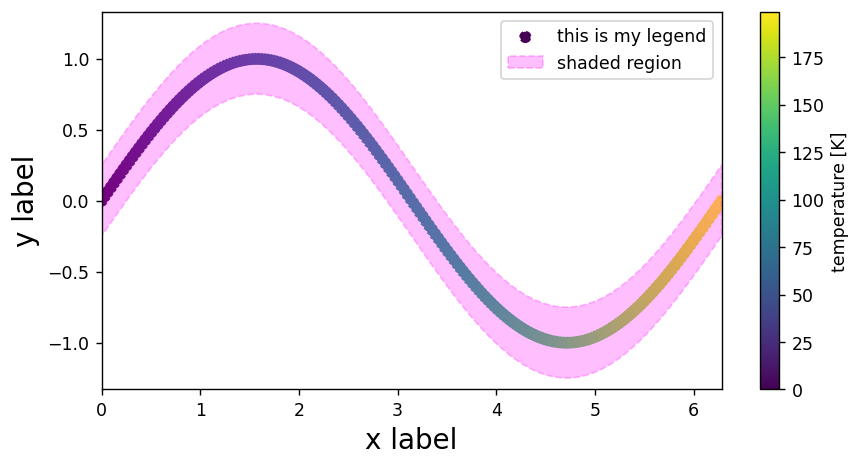
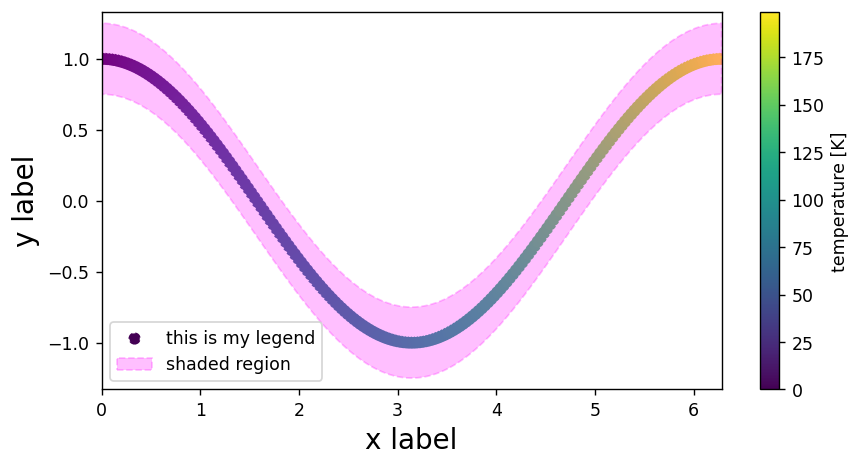

Good and Bad Coding Practices
Contents
Good and Bad Coding Practices¶
Guidelines and Ideas¶
Some general things I like to keep in mind:
Make code modular!
Clear is often better than concise.
No magic numbers.
Logical and sensible variable names.
Frequently TEST your code!
In the real world, code is shared and needs to be readable!
Perhaps most important – comment the code and have great documentation. Most astronomy codes are legacy and you rely on others.
What’s bad here?¶
import numpy as np
import matplotlib
import astropy
b = 1.496e+13
constant = 6.67e-8
def function(v):
constant = 15
return np.sqrt((4*3.14**2 / (constant*(2e33)))*v**3) # had to fix this at some point last week
function(b)
2097.956150167288
Improvements¶
# IMPORT STATEMENTS
import numpy as np
import matplotlib.pyplot as plt
# GLOBAL CONSTANTS
G = 6.67e-8 # NEWTON'S G, cgs units
pi = np.pi # pull value of pi from numpy
Msun = 2e33 # mass of sun in grams
# ------ DEFINE FUNCTIONS
def seconds_to_years(time_in_seconds):
'''
Helper function to convert time in seconds to time in years.
'''
# time in year =
# time_in_seconds * (1/days)*(hours/day)*(minutes/hour)*(seconds/minute)
time_in_years = time_in_seconds / 365.25 / 24 / 60 / 60
return time_in_years
def keplers_third_law(a):
'''
Function which solves for time of orbit T in Kepler's Third Law
for objects in our Solar System:
T^2 = ((4*pi^2) / (G*Mstar)) * a**3
INPUTS:
a : semi-major axis of orbit in centimeters
OUTPUTS:
T : orbital period in seconds
'''
T_in_seconds = np.sqrt(((4*pi**2)/(G*Msun)) * a**3)
T_in_years = seconds_to_years(T_in_seconds)
return T_in_seconds
semi_major_axis = 1.5e13 # Earth-Sun distance in cm
length_of_year = keplers_third_law(semi_major_axis) # evaluate function
print(f'The $\\chi^2$ length of a year is approximately {np.round(length_of_year,2)} seconds.') # print the result
The $\chi^2$ length of a year is approximately 31603766.34 seconds.
Some other good practices:¶
# --- importing libraries
import numpy as np
import matplotlib.pyplot as plt
# --- generating data
# generate some data
x = np.linspace(0,2*np.pi,200)
y = np.sin(x)
z = np.arange(0,len(x))
# --- plotting the data
# generate figure
plt.figure(dpi=125,figsize=(8,4))
# add points to the plot
plt.scatter(x,y,c=z,ls='dashed',label='this is my legend')
# add shaded region to the plot
plt.fill_between(x,y1=y+0.25,y2=y-0.25,
color='magenta',alpha=0.25,ls='dashed',
label='shaded region')
# add colorbar
plt.colorbar(label='temperature [K]')
# add axis labels, titles, legends
plt.xlabel('x label',fontsize=16)
plt.ylabel('y label',fontsize=16)
plt.legend()
# change limits
plt.xlim(0,2*np.pi)
plt.ylim(-1.33,1.33)
# display figure
plt.show()

def make_plot(x,y,z):
# generate figure
plt.figure(dpi=125,figsize=(8,4))
# add points to the plot
plt.scatter(x,y,c=z,ls='dashed',label='this is my legend')
# add shaded region to the plot
plt.fill_between(x,y1=y+0.25,y2=y-0.25,
color='magenta',alpha=0.25,ls='dashed',
label='shaded region')
# add colorbar
plt.colorbar(label='temperature [K]')
# add axis labels, titles, legends
plt.xlabel('x label',fontsize=16)
plt.ylabel('y label',fontsize=16)
plt.legend()
# change limits
plt.xlim(0,2*np.pi)
plt.ylim(y.min()-0.33,y.max()+0.33)
# display figure
plt.show()
# data
x = np.linspace(0,2*np.pi,200)
y = np.cos(x)
z = np.arange(0,len(x))
# call our function
make_plot(x,y,z)
